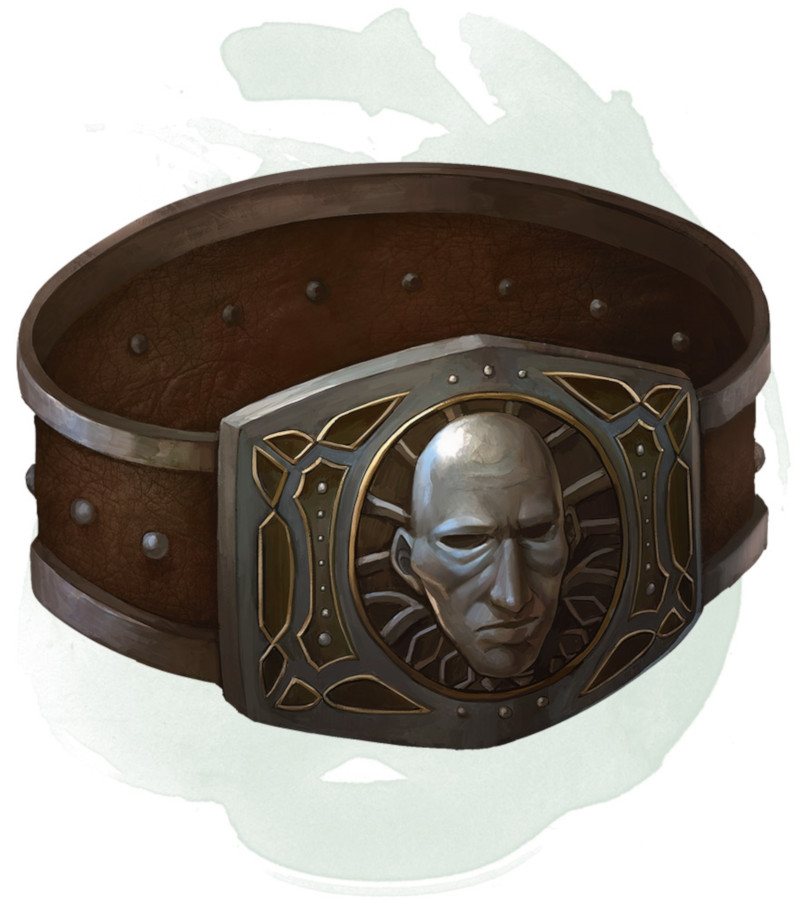

Ceinturon de force de géant
[ Belt of Giant Strength ] [ Ceinturon de force du géant ]
Objet merveilleux, variable (nécessite un lien)
Tant que vous portez ce ceinturon, votre valeur de Force change pour celle conférée par le ceinturon. L'objet n'a aucun effet sur vous si votre Force sans la ceinture est égale ou supérieure à celle du ceinturon.
Six variétés de ceinturon existent, chacune ayant sa propre rareté et correspondant à un des six types de géant véritable. Le ceinturon de force du géant des pierres et le ceinturon de force du géant du givre semblent différents, mais ils ont les mêmes effets.
Six variétés de ceinturon existent, chacune ayant sa propre rareté et correspondant à un des six types de géant véritable. Le ceinturon de force du géant des pierres et le ceinturon de force du géant du givre semblent différents, mais ils ont les mêmes effets.
| Type | Force | Rareté |
|---|---|---|
| Géant des collines | 21 | Rare |
| Géant des pierre/du givre | 23 | Très rare |
| Géant du feu | 25 | Très rare |
| Géant des nuages | 27 | Légendaire |
| Géant des tempêtes | 29 | Légendaire |
Dungeon Master´s Guide (SRD)
